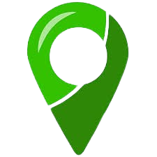
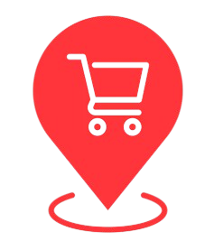

{% extends "base.html" %}

{% block title %}Home - India Village-Mandi Routing{% endblock %}

{% block content %}
<style>
    .dropdown-panel { display: none; background: #f1f3f9; padding: 15px; border-radius: 10px; box-shadow: 0 2px 6px rgba(0,0,0,0.15); margin-top: 10px; width: 320px; position: absolute; z-index: 5000; }
    .dropdown-panel select { width: 100%; padding: 8px; border-radius: 6px; border: 1px solid #ccc; max-height: 120px; overflow-y: auto; margin-top: 5px; }
    .corridor-wrapper { position: relative; display: inline-block; }
    .dropdown-actions { display: none; position: absolute; left: 0; top: calc(100% + 6px); min-width: 180px; background: #f1f3f9; border: 1px solid #cccccc; border-radius: 6px; box-shadow: 0 2px 6px rgba(0,0,0,0.15); z-index: 10000; }
    .dropdown-actions button { display: block; width: 100%; padding: 10px 15px; border: none; background: transparent; text-align: left; cursor: pointer; font-size: 14px; }
    .dropdown-actions button:hover { background: #53bbef; }
    #map { width: 100%; border-radius: 10px; margin-bottom: 20px; height: 720px; }
    .selected-info { margin-bottom: 15px; padding: 12px 15px; background: #f1f3f9; border-radius: 8px; border: 1px solid #ccc; font-size: 16px; color: #333; }
</style>

<link rel="stylesheet" href="https://unpkg.com/leaflet-routing-machine@3.2.12/dist/leaflet-routing-machine.css" />
<script src="https://unpkg.com/leaflet-routing-machine@3.2.12/dist/leaflet-routing-machine.min.js"></script>
<script src="https://cdnjs.cloudflare.com/ajax/libs/jspdf/2.5.1/jspdf.umd.min.js"></script>
<script src="https://cdnjs.cloudflare.com/ajax/libs/html2canvas/1.4.1/html2canvas.min.js"></script>

<div style="display: flex; gap: 20px; margin-bottom: 20px;">
    <button onclick="togglePanel('villagePanel')" style="padding: 10px 20px; border-radius: 8px; border: none; background: #4527a0; color: white; cursor: pointer;">Select Village</button>
    <button onclick="togglePanel('mandiPanel')" style="padding: 10px 20px; border-radius: 8px; border: none; background: #4527a0; color: white; cursor: pointer;">Select Mandi</button>
    <div class="corridor-wrapper">
        <button id="corridorBtn" type="button" onclick="toggleCorridorMenu()" style="padding: 10px 20px; border-radius: 8px; border: none; background: #4527a0; color: white; cursor: pointer;">Show Corridor ▾</button>
        <div id="corridorMenu" class="dropdown-actions">
            <button type="button" onclick="handleCorridor('local')">Local Corridor</button>
            <button type="button" onclick="handleCorridor('highway')">Highway</button>
            <button type="button" onclick="handleCorridor('shortest')">Shortest</button>
        </div>
    </div>
    <button onclick="downloadPDF()" style="padding: 10px 20px; border-radius: 8px; border: none; background: #60d348; color: white; cursor: pointer;">Download Details</button>
    <button onclick="resetPage()" style="padding: 10px 20px; border-radius: 8px; border: none; background: #e10c0c; color: white; cursor: pointer;">Reset</button>
</div>

<div style="display: flex; flex-wrap: wrap; gap: 25px; margin-bottom:20px;">
    <!-- Village Panel -->
    <div id="villagePanel" class="dropdown-panel">
        <h2 style="margin-top: 0; color: #4527a0;">Select Village</h2>
        <div style="margin-bottom: 15px;">
            <label for="villageState">State</label>
            <select id="villageState" onchange="filterVillageDistricts()">
                <option value="">Select State</option>
                {% for s in states %}<option value="{{ s.id }}">{{ s.state_name }}</option>{% endfor %}
            </select>
        </div>
        <div style="margin-bottom: 15px;">
            <label for="villageDistrict">District</label>
            <select id="villageDistrict" onchange="filterVillages()">
                <option value="">Select District</option>
                {% for d in districts %}<option value="{{ d.id }}" data-state="{{ d.state.id }}">{{ d.district_name }}</option>{% endfor %}
            </select>
        </div>
        <div style="margin-bottom: 15px;">
            <label for="village">Village</label>
            <select id="village">
                <option value="">Select Village</option>
                {% for v in villages %}
                    <option value="{{ v.id }}" {% if v.district %}data-district="{{ v.district.id }}"{% endif %} data-lat="{{ v.latitude }}" data-lng="{{ v.longitude }}">{{ v.name }}</option>
                {% endfor %}
            </select>
        </div>
        <button onclick="closePanel('villagePanel')" style="margin-top: 10px; padding: 8px 16px; border-radius: 6px; border: none; background: #388e3c; color: white;">Done</button>
    </div>

    <!-- Mandi Panel -->
    <div id="mandiPanel" class="dropdown-panel">
        <h2 style="margin-top: 0; color: #4527a0;">Select Mandi</h2>
        <div style="margin-bottom: 15px;">
            <label for="mandiState">State</label>
            <select id="mandiState" onchange="filterMandiDistricts()">
                <option value="">Select State</option>
                {% for s in states %}<option value="{{ s.id }}">{{ s.state_name }}</option>{% endfor %}
            </select>
        </div>
        <div style="margin-bottom: 15px;">
            <label for="mandiDistrict">District</label>
            <select id="mandiDistrict" onchange="filterMandis()">
                <option value="">Select District</option>
                {% for d in districts %}<option value="{{ d.id }}" data-state="{{ d.state.id }}">{{ d.district_name }}</option>{% endfor %}
            </select>
        </div>
        <div style="margin-bottom: 15px;">
            <label for="mandi">Mandi</label>
            <select id="mandi">
                <option value="">Select Mandi</option>
                {% for m in mandis %}
                    <option value="{{ m.id }}" {% if m.district %}data-district="{{ m.district.id }}"{% endif %} data-lat="{{ m.latitude }}" data-lng="{{ m.longitude }}">{{ m.mandi_name }}</option>
                {% endfor %}
            </select>
        </div>
        <button onclick="closePanel('mandiPanel')" style="margin-top: 10px; padding: 8px 16px; border-radius: 6px; border: none; background: #388e3c; color: white;">Done</button>
    </div>
</div>

<div class="selected-info">
    <strong>Selected Village:</strong> <span id="displayVillage">None</span> &nbsp; | &nbsp;
    <strong>Selected Mandi:</strong> <span id="displayMandi">None</span>
</div>

<div id="map"></div>
<script>
var map = L.map('map').setView([30.7333, 76.7794], 7);
L.tileLayer('https://{s}.tile.openstreetmap.org/{z}/{x}/{y}.png', { attribution: '&copy; OpenStreetMap contributors' }).addTo(map);

var villageMarker = null;
var mandiMarker = null;
var routeLayer = null;
var currentRouteType = null; // corridor type selected by user

// Panel toggle
function togglePanel(id){ const p=document.getElementById(id); document.querySelectorAll('.dropdown-panel').forEach(x=>{if(x.id!==id)x.style.display='none'}); p.style.display=(p.style.display==='block')?'none':'block'; }
function closePanel(id){ document.getElementById(id).style.display='none'; }

// Filters (unchanged)
function filterVillageDistricts(){ const s=document.getElementById("villageState").value; const d=document.getElementById("villageDistrict"); d.value=''; for(let o of d.options) if(o.value)o.style.display=(o.dataset.state===s||s==="")?'block':'none'; filterVillages(); }
function filterVillages(){ const d=document.getElementById("villageDistrict").value; const v=document.getElementById("village"); v.value=''; for(let o of v.options) if(o.value)o.style.display=(o.dataset.district===d||d==="")?'block':'none'; }
function filterMandiDistricts(){ const s=document.getElementById("mandiState").value; const d=document.getElementById("mandiDistrict"); d.value=''; for(let o of d.options) if(o.value)o.style.display=(o.dataset.state===s||s==="")?'block':'none'; filterMandis(); }
function filterMandis(){ const d=document.getElementById("mandiDistrict").value; const m=document.getElementById("mandi"); m.value=''; for(let o of m.options) if(o.value)o.style.display=(o.dataset.district===d||d==="")?'block':'none'; }

// Corridor menu
function toggleCorridorMenu(){ 
    const menu=document.getElementById("corridorMenu"); 
    menu.style.display=(menu.style.display==='block')?'none':'block'; 
}

function handleCorridor(type){
    currentRouteType = type;
    document.getElementById("corridorMenu").style.display = 'none';
    
    if(villageMarker && mandiMarker){
        const vLatLng = villageMarker.getLatLng();
        const mLatLng = mandiMarker.getLatLng();
        drawCorridor([vLatLng.lat, vLatLng.lng], [mLatLng.lat, mLatLng.lng], type);
    } else {
        alert("Please select both Village and Mandi first.");
    }
}


// Update markers only (do NOT draw route)
function updateSelectedInfo(){
    const vOpt = document.getElementById("village")?.selectedOptions[0];
    const mOpt = document.getElementById("mandi")?.selectedOptions[0];

    document.getElementById("displayVillage").textContent = vOpt?.text || "None";
    document.getElementById("displayMandi").textContent = mOpt?.text || "None";

    // Remove existing markers
    if(villageMarker) map.removeLayer(villageMarker);
    if(mandiMarker) map.removeLayer(mandiMarker);

    // Define custom icons using your own files
   const villageIcon = L.divIcon({
        className: 'custom-marker',
        html: '',
        iconSize: [45, 5],
        iconAnchor: [16, 32],
        popupAnchor: [0, -32]
    });

    const mandiIcon = L.divIcon({
        className: 'custom-marker',
        html: '',
        iconSize: [45, 45],
        iconAnchor: [16, 32],
        popupAnchor: [0, -32]
    });

    // Add village marker
    if(vOpt?.dataset.lat && vOpt?.dataset.lng){
        const vLat = parseFloat(vOpt.dataset.lat), vLng = parseFloat(vOpt.dataset.lng);
        villageMarker = L.marker([vLat, vLng], { icon: villageIcon })  // use custom icon here
            .addTo(map)
            .bindPopup("Village: " + vOpt.text);
    }

    // Add mandi marker
    if(mOpt?.dataset.lat && mOpt?.dataset.lng){
        const mLat = parseFloat(mOpt.dataset.lat), mLng = parseFloat(mOpt.dataset.lng);
        mandiMarker = L.marker([mLat, mLng], { icon: mandiIcon })  // use custom icon here
            .addTo(map)
            .bindPopup("Mandi: " + mOpt.text);
    }

    // Adjust map view to markers
    const bounds = [];
    if(villageMarker) bounds.push(villageMarker.getLatLng());
    if(mandiMarker) bounds.push(mandiMarker.getLatLng());
    if(bounds.length === 2){
        map.fitBounds(bounds, {padding: [50,50]});
    } else if(bounds.length === 1){
        map.setView(bounds[0], 8);
    }
}


// Draw corridor (roads, optional toll plazas)
function drawCorridor(village, mandi, type) {
    if (!type) type = "shortest";

    // Remove old route if exists
    if (routeLayer) map.removeLayer(routeLayer);

    // Define toll plaza icon (commented for now)
    // const tollDivIcon = L.divIcon({
    //     className: 'custom-marker',
    //     html: '',
    //     iconSize: [32, 32],
    //     iconAnchor: [16, 32],
    //     popupAnchor: [0, -32]
    // });

    fetch(`/route/?src_lat=${village[0]}&src_lng=${village[1]}&dst_lat=${mandi[0]}&dst_lng=${mandi[1]}&type=${type}`)
        .then(res => res.json())
        .then(data => {
            if (data.error) {
                alert(data.error);
                return;
            }

            if (data.features && data.features.length > 0) {
                // Draw GeoJSON
                routeLayer = L.geoJSON(data, {
                    style: feature => ({
                        color: feature.properties.color || "gray", // use backend color
                        weight: 4,  // fixed line width
                        opacity: 0.8
                    }),

                    // --- Toll plazas (commented) ---
                    // pointToLayer: function(feature, latlng) {
                    //     if (feature.properties.icon === "toll") {
                    //         return L.marker(latlng, { icon: tollDivIcon })
                    //             .bindPopup(`<b>Toll Plaza:</b> ${feature.properties.name}`);
                    //     }
                    //     return L.marker(latlng);
                    // },

                    onEachFeature: function(feature, layer) {
                        if (feature.geometry.type === "LineString") {
                            layer.bindTooltip(
                                `<b>Width:</b> ${feature.properties.width || "N/A"} m<br>` +
                                `<b>Cost:</b> ${feature.properties.cost_m.toFixed(2)} m`
                            );
                        }
                    }
                }).addTo(map);

                // Zoom to route
                map.fitBounds(routeLayer.getBounds());
                window.routeDistanceKm = data.distance_km;
            } else {
                alert(`No ${type} route exists between selected points!`);
            }
        })
        .catch(err => console.error("Error fetching route:", err));
}

// Event listeners (just update selected info, not draw immediately)
document.getElementById("village").addEventListener("change", updateSelectedInfo);
document.getElementById("mandi").addEventListener("change", updateSelectedInfo);

</script>
{% endblock %}
